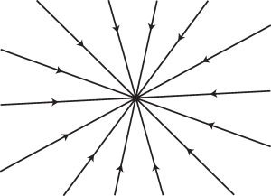
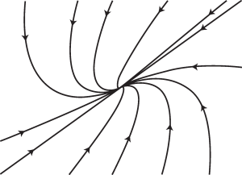
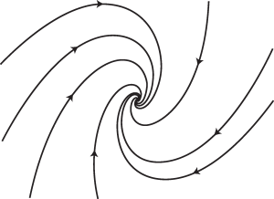

Lampiran ini mengulas secara singkat metode-metode yang paling umum untuk menyelesaikan persamaan diferensial biasa (PDB). Banyak PDB atau sistem PDB yang diperkenalkan dalam catatan ini bersifat nonlinear sehingga tidak dapat diselesaikan dengan mudah menggunakan metode-metode tersebut. Namun, analisis kestabilan linear titik tetap bertumpu pada penyelesaian sistem linear berkoefisien konstan, yang dibahas di sini. Selain itu, seorang pemodel harus mampu mengenali PDB yang dapat diselesaikan secara eksak dan menyelesaikannya jika diperlukan. Informasi di bawah ini dimaksudkan sebagai rujukan cepat; teorema-teorema diberikan tanpa bukti dan pembaca sebaiknya merujuk pada buku-buku klasik tentang persamaan diferensial untuk memperoleh perinciannya.
Definisi dan teorema dasar tentang eksistensi
Definisi
- Sebuah persamaan diferensial biasa berorde $latex n$ adalah persamaan berbentuk
$latex \displaystyle \frac{d^n y}{d x^n}=F\left( x,y,\frac{d y}{d x},\dots,\frac{d^{n-1} y} {d x^{n-1}}\right). \qquad (13.1)$
- Sebuah solusi persamaan diferensial ini adalah fungsi yang dapat didiferensialkan sebanyak $latex n$ kali, yaitu $latex y(x)$ dari peubah real $latex x$, yang memenuhi Persamaan (13.1).
- Sebuah syarat awal adalah penetapan nilai $latex y$ beserta turunan-turunannya hingga orde $latex (n-1)$ pada suatu titik $latex x_0$. Syarat ini berbentuk sebagai berikut, dengan $latex y_0$, $latex y_1$, ... $latex y_{n-1}$ merupakan bilangan-bilangan yang diberikan:
$latex \displaystyle \label{init} y(x_0)=y_0, \frac{d y}{d x}(x_0)=y_1, \dots \frac{d^{n-1}y}{d x^{n-1}}(x_0) = y_{n-1}, \qquad (13.2)$
- Syarat batas menetapkan nilai kombinasi linear dari $latex y$ dan turunan-turunannya pada dua nilai $latex x$ yang berbeda.
Teorema eksistensi dan ketunggalan
Di bawah ini kami mencantumkan teorema-teorema utama tentang eksistensi dan ketunggalan solusi sistem persamaan diferensial biasa orde pertama. Perhatikan bahwa Persamaan (13.1) dapat ditulis sebagai sistem orde pertama
$latex \displaystyle \label{ode_fo} \frac{d Y}{d x} = f(x,Y) \qquad (13.3)$
dengan menetapkan $latex \displaystyle Y = \left(y,\frac{dy}{d x},\frac{d^2 y}{d x^2}, \cdots, \frac{d^{n-1} y}{d x^{n-1}}\right)$.
Teorema Cauchy–Peano
Jika $latex f$ kontinu pada persegi panjang $latex {\mathcal R} = \left\{|x-x_0| \le a, ||Y - Y_0|| \le b \right\}$ dengan $latex a > 0$ dan $latex b > 0,$ maka terdapat solusi $latex Y$ dari (13.3) yang terdiferensialkan secara kontinu pada $latex |x - x_0| \le \alpha$ dan memenuhi $latex Y(x_0) = Y_0$, dengan
$latex \alpha = \min\left(a, \frac{b}{M}\right), \quad M = \max_{(x,Y) \in {\mathcal R}} ||f(x,Y)||.$
Teorema Picard–Lindelöf
Jika $latex f$ bersifat Lipschitz pada $latex \mathcal R$, yakni jika terdapat konstanta $latex k > 0$ sedemikian sehingga
$latex \forall (x,Y_1) \in {\mathcal R}, \forall (x,Y_2) \in {\mathcal R}, ||f(x,Y_1) - f(x,Y_2) || < k ||Y_1 - Y_2||,$
dan jika $latex f$ kontinu pada $latex \mathcal R$, maka terdapat solusi tunggal $latex Y$ dari (13.3) pada $latex |x - x_0| \le \alpha$ yang memenuhi $latex Y(x_0) = Y_0.$
Secara bersama-sama, teorema-teorema ini menyiratkan bahwa untuk sistem dinamik yang terdiferensialkan secara kontinu dan berbentuk (13.3), setiap masalah nilai awal memiliki solusi tunggal. Karena $latex f$ dalam (13.3) dapat bergantung secara eksplisit pada variabel bebas, kesimpulan tanpa-perpotongan berlaku dalam ruang keadaan diperluas (x,Y); untuk sistem otonom berbentuk (13.3), kesimpulan itu berlaku langsung bagi lintasan dalam ruang fase Y.
Berikut ini kami mencantumkan berbagai teknik umum yang digunakan untuk menyelesaikan persamaan diferensial. Syarat awal atau syarat batas sebaiknya diterapkan setelah solusi umum diperoleh.
Persamaan diferensial orde pertama
Kita mulai dengan persamaan diferensial orde pertama, yang kita tulis sebagai
$latex M(x,y) dx + N(x,y) dy=0.$
Persamaan terpisahkan
Jika $latex \displaystyle \frac{M(x,y)}{N(x,y)}= - f(x) g(y),$ maka persamaan tersebut dapat dipisahkan dan berbentuk
$latex \displaystyle f(x) dx=\frac{1}{g(y)} dy,$
yang dapat diintegralkan dengan mudah.
Contoh
Solusi masalah nilai awal $latex \displaystyle \frac{d y}{d x}=\frac{3 x^2 + 4 x + 2}{2 (y-1)}, \quad y(0)=-1$ adalah $latex y=1-\sqrt{x^3 + 2 x^2 + 2 x + 4}$.
Persamaan dengan M dan N yang keduanya homogen berderajat n
Jika $latex M(x,y)$ dan $latex N(x,y)$ keduanya homogen berderajat $latex n$, maka perubahan peubah $latex v=y/x$ (atau $latex u=x/y$) akan menjadikan PDB tersebut dapat dipisahkan.
Contoh
Keluarga solusi persamaan $latex \displaystyle \frac{d y}{d x}=\frac{y^2 + 2 x y}{x^2}$ adalah $latex \displaystyle y = \frac{C x^2}{1 - C x}$, dengan $latex C$ konstanta sembarang. Selain keluarga ini, $latex y=-x$ juga merupakan solusi dan tidak diperoleh untuk nilai parameter C yang berhingga.
Persamaan eksak
Jika $latex {\partial M}/{\partial y}$ dan $latex {\partial N}/{\partial x}$ kontinu dan jika $latex \displaystyle \frac{\partial M}{\partial y}=\frac{\partial N}{\partial x},$ maka PDB tersebut eksak, yaitu terdapat $latex u(x,y)$ sedemikian sehingga
$latex \displaystyle \frac{\partial u}{\partial x}=M(x,y) \qquad \text{dan} \qquad \frac{\partial u}{\partial y}=N(x,y).$
Dengan demikian, PDB dapat ditulis dalam bentuk
$latex \displaystyle \frac{\partial u}{\partial x} dx + \frac{\partial u}{\partial y} dy=0,$
yang menghasilkan $latex d \left(u(x,y) \right)=0$, yaitu $latex u(x,y)=C$. Fungsi $latex u$ dapat diperoleh dengan mengintegralkan kedua persamaan
$latex \displaystyle \frac{\partial u}{\partial x}=M(x,y) \quad \text{ dan } \quad \frac{\partial u}{\partial y}=N(x,y).$
Contoh
Solusi umum persamaan $latex \displaystyle (y \cos(x) + 2 x e^y) + (\sin(x) + x^2 e^y - 1) y^\prime = 0$ diberikan secara implisit oleh $latex y \sin(x) + x^2 e^y - y = C$, dengan $latex C$ konstanta sembarang.
Faktor integrasi
Faktor integrasi adalah fungsi $latex \rho(x,y)$ sedemikian sehingga persamaan diferensial
$latex \rho(x,y)\left[ M(x,y) dx + N(x,y) dy \right]$
bersifat eksak. Jika $latex \displaystyle \frac{\partial M}{\partial y} \ne \frac{\partial N}{\partial x},$ tetapi
- $latex \displaystyle \frac{\partial M}{\partial y}-\frac{\partial N}{\partial x} =-n \frac{M}{y} + m \frac{N}{x},$ gunakan faktor integrasi $latex \rho(x,y)=x^m y^n.$
- Jika $latex \displaystyle \frac{1}{N} \left[\frac{\partial M}{\partial y}-\frac{\partial N}{\partial x}\right]$ hanya bergantung pada $latex x$ dan hasilnya dinamai f(x), faktor integrasinya adalah $latex \rho(x)=\exp\left(\int f(x)\,dx\right).$
- Jika $latex \displaystyle \frac{1}{M} \left[\frac{\partial M}{\partial y}-\frac{\partial N} {\partial x}\right]$ hanya bergantung pada $latex y$ dan hasilnya dinamai f(y), faktor integrasinya adalah $latex \rho(y)=\exp\left(-\int f(y)\,dy\right).$
Contoh
Solusi umum persamaan $latex \displaystyle 3 x y + y^2 + (x^2 + x y) \frac{d y}{d x} = 0$ diberikan secara implisit oleh $latex \displaystyle x^3 y + \frac{1}{2} x^2 y^2 = C$.
Persamaan linear
Jika persamaan diferensial dapat ditulis dalam bentuk $latex y^\prime + p(x) y = q(x),$ yaitu jika
$latex \displaystyle -\frac{M(x,y)}{N(x,y)} =-p(x) y + q(x),$
maka PDB tersebut linear. Misalkan $latex \rho(x)=\exp\left[\int p(x) dx\right]$. Kita peroleh
$latex \displaystyle \rho^\prime(x)=p(x) \exp\left[\int p(x) dx \right]=p(x) \rho(x),$
dan dengan mengalikan PDB dengan $latex \rho(x)$, kita memperoleh
$latex \begin{align*} &y^\prime \rho(x)+p(x) \rho(x) y = q(x) \rho(x) \\ \Longleftrightarrow &\displaystyle \frac{d}{d x}\left[\rho(x) y\right]=q(x) \rho(x),\\ \Longleftrightarrow & y \rho(x)=\int q(x) \rho(x) dx + C, \\ \Longleftrightarrow & \displaystyle y=\frac{1}{\rho(x)} \int q(x) \rho(x) dx + \frac{C}{\rho(x)}, \\ \Longleftrightarrow & y=\left[\int q(x) \rho(x) dx + C\right] \exp\left[-\int p(x)\
dx \right].\end{align*}$
Contoh 1
Solusi umum persamaan $latex y^\prime + 2 y = e^{-x}$ adalah $latex y = e^{-x} + C e^{-2 x}.$
Contoh 2
Solusi persamaan $latex y^\prime - 2 x y = x$ dengan syarat $latex y(0)=0$ adalah $latex \displaystyle y = - \frac{1}{2} + \frac{1}{2} e^{x^2}.$
Persamaan Bernoulli
Jika $latex \displaystyle -\frac{M(x,y)}{N(x,y)}=-p(x) y + q(x) y^n,$ dengan $latex n\ne 0,1,$ kita memperoleh persamaan Bernoulli berikut
$latex y^\prime + p(x) y=q(x) y^n.$
Persamaan nonlinear ini dapat diubah menjadi bentuk persamaan linear melalui perubahan peubah $latex u=y^{1-n}$.
Contoh
Keluarga solusi tak nol persamaan $latex x^2 y^\prime + 2 x y - y^3 = 0, x>0$ adalah $latex \displaystyle y = \pm \sqrt{\frac{5 x}{2 + C x^5}}$. Solusi nol $latex y=0$ juga memenuhi persamaan.
Persamaan Riccati
Jika $latex \displaystyle -\frac{M(x,y)}{N(x,y)}=a_0(x) + a_1(x) y + a_2(x) y^2,$ kita memperoleh persamaan Riccati berikut
$latex y^\prime=a_0(x) + a_1(x) y + a_2(x) y^2.$
Untuk menyelesaikannya, lakukan langkah-langkah berikut.
- Carilah solusi khusus $latex y=y_1(x)$ dengan mencoba fungsi-fungsi sederhana seperti $latex a x^b$ atau $latex a \exp(b x)$.
- Perhatikan bahwa $latex u=y-y_1$ memenuhi persamaan Bernoulli berikut (dengan $latex n=2$): $latex \begin{align*} u^\prime & = a_1(x) u + a_2(x) u (2 y_1(x)+u)\\ & = \left[ a_1(x)+2 a_2(x) y_1(x)\right] u + a_2(x) u^2,\end{align*}$
- Ubahlah persamaan di atas menjadi persamaan linear dengan menerapkan perubahan peubah $latex w=u^{1-2}=1/u$, lalu selesaikan untuk $latex w$. Dalam peubah semula, solusi $latex y$ diberikan oleh $latex y=y_1+1/w$.
Contoh
Keluarga solusi persamaan $latex y^\prime = 1 + x^2 - 2 x y + y^2$ adalah $latex y = x + 1/(C - x)$. Solusi khusus $latex y=x$ juga memenuhi persamaan dan tidak termasuk dalam keluarga untuk nilai parameter C yang berhingga.
Persamaan Clairaut
Persamaan diferensial $latex y = x y^\prime + f(y^\prime)$ memiliki keluarga garis lurus berikut sebagai solusi
$latex y = c x + f(c), \qquad c=\text{ konstan}$
dan juga dapat memiliki solusi singular dalam bentuk parametrik
$latex \left \{ \begin{array}{l} x=-f^\prime(p) \\ y= p x + f(p) \end{array}.\right.$
Contoh
Solusi umum persamaan $latex \displaystyle y = y^\prime x + \frac{1}{y^\prime}$ adalah $latex y=C x + 1/C$ dan salah satu solusi singularnya adalah $latex y^2 = 4 x$.
Persamaan diferensial orde kedua
Persamaan tanpa y
Persamaan diferensial orde kedua yang tidak memuat $latex y$ berbentuk $latex F(y^{\prime\prime}, y^\prime, x)=0.$ Dengan $latex w=y^\prime,$ persamaan ini menjadi $latex F(w^\prime, w, x)=0,$ yang merupakan persamaan orde pertama. Persamaan tersebut mula-mula dapat diselesaikan untuk $latex w$, kemudian untuk $latex y,$ dengan menggunakan $latex w=d y / d x$.
Contoh
Solusi umum persamaan $latex x^2 y^{\prime\prime} + {y^\prime}^2 - 2 x y^\prime = 0$ adalah
$latex \displaystyle y = \frac{1}{2} x^2 - C_1 x + C_1^2 \ln(|x+C_1|) + C_2,$
dengan $latex C_1$ dan $latex C_2$ konstanta sembarang. Selain keluarga tersebut, setiap fungsi konstan $latex y=C$ juga merupakan solusi.
Persamaan tanpa x
PDB jenis ini berbentuk $latex F(y^{\prime\prime}, y^\prime, y)=0.$ Misalkan $latex w=d y / d x$ merupakan fungsi $latex y$. Maka,
$latex \displaystyle \frac{d^2 y}{d x^2}=\frac{d w}{d x}=\frac{d w}{d y} \frac{d y}{d x}= \frac{d w}{d y} w,$
dan PDB tersebut menjadi $latex \displaystyle F(w \frac{d w}{d y}, w, y)=0,$ yang merupakan persamaan diferensial orde pertama dengan $latex y$ sebagai peubah bebas. Persamaan ini dapat diselesaikan untuk $latex w$ sebagai fungsi $latex y$, kemudian persamaan terpisahkan orde pertama $latex \displaystyle \frac{d y}{d x}=w(y)$ dapat diselesaikan.
Contoh
Solusi umum persamaan $latex \displaystyle y y^{\prime\prime} + \left(y^\prime \right)^2 + 4 = 0$ diberikan secara implisit oleh
$latex \displaystyle x^2 = \left(C_2 + \frac{1}{4 C_1} \sqrt{1-4 C_1^2 y^2}\right)^2$.
Persamaan linear
Solusi umum persamaan $latex \displaystyle a_2(x) y^{\prime\prime} + a_1(x) y^\prime + a_0(x) y=h(x)$ berbentuk
$latex y(x)=C_1 y_1(x) + C_2 y_2(x)+y_p(x),$
dengan
- $latex y_p(x)$ merupakan solusi khusus dari persamaan $latex a_2(x) y^{\prime\prime} + a_1(x) y^\prime + a_0(x) y=h(x)$,
- $latex y_1$ dan $latex y_2$ merupakan dua solusi bebas linear satu sama lain dari persamaan homogen terkait $latex a_2(x) y^{\prime\prime} + a_1(x) y^\prime + a_0(x) y=0,$
- $latex C_1$ dan $latex C_2$ merupakan dua konstanta sembarang.
Dengan demikian, persamaan linear di atas diselesaikan dalam dua langkah:
- Selesaikan persamaan homogen (yaitu, carilah dua solusi bebas linear $latex y_1$ dan $latex y_2$),
- Carilah solusi khusus persamaan lengkap.
Cara menyelesaikan persamaan homogen
Solusi umum $latex y$ dari persamaan homogen
$latex a_2(x) y^{\prime\prime} + a_1(x) y^\prime + a_0(x) y=0$
merupakan kombinasi linear dari dua solusi bebas linearnya $latex y_1$ dan $latex y_2$, yaitu $latex y=C_1 y_1+C_2 y_2$ dengan $latex C_1$ dan $latex C_2$ konstanta.
Persamaan dengan koefisien konstan
Misalkan persamaan diferensial homogen tersebut berbentuk
$latex a_2 y^{\prime\prime} + a_1 y^\prime + a_0 y=0,$
dengan $latex a_2$, $latex a_1$, dan $latex a_0$ konstanta. Persamaan karakteristik yang terkait adalah $latex a_2 r^2 + a_1 r + a_0=0$.
- Jika persamaan karakteristik mempunyai dua akar real berbeda $latex r_1$ dan $latex r_2$, maka dua solusi bebas linear persamaan homogen tersebut adalah
$latex y_1(x)=\exp(r_1 x) \qquad \text{dan} \qquad y_2(x)=\exp(r_2 x).$
- Jika persamaan karakteristik mempunyai dua akar kompleks $latex \alpha \pm i \beta$, dua solusi bebas linearnya adalah
$latex y_1(x)=\exp(\alpha x) \cos(\beta x) \qquad y_2(x)=\exp(\alpha x) \sin(\beta x).$
- Jika persamaan karakteristik mempunyai satu akar real berulang $latex r$, dua solusi bebas linearnya adalah
$latex y_1(x)=\exp(r x) \qquad y_2(x)=x \exp(r x).$
Contoh 1
Solusi masalah nilai awal $latex y^{\prime\prime} + y^\prime - 2 y = 0$, $latex y(0)=0$, dan $latex y^\prime(0)=3$ adalah $latex \displaystyle y = e^x - e^{-2 x}$.
Contoh 2
Solusi umum persamaan $latex y^{\prime\prime} - 4 y^\prime + 4 y = 0$ adalah $latex \displaystyle y=C_1 e^{2 x} + C_2 x e^{2 x}$.
Persamaan Cauchy–Euler
Jika PDB tersebut berbentuk
$latex a_2 x^2 y^{\prime\prime} + a_1 x y^\prime+ a_0 y=0, \quad a_2, a_1, \text{dan }a_0 \text{ konstan},$
kita mencari solusi berbentuk $latex y=x^r=\exp(r \ln(x))$ (yang didefinisikan untuk $latex x>0$). Kemudian, $latex r$ harus memenuhi
$latex a_2 r (r-1)+a_1 r+a_0=0.$
- Jika persamaan ini mempunyai dua akar real berbeda $latex r_1$ dan $latex r_2$, maka dua solusi bebas linearnya adalah
$latex y_1=x^{r_1} \qquad y_2=x^{r_2},$
- Jika persamaan ini mempunyai dua akar kompleks $latex \alpha \pm i \beta$, dua solusi bebas linearnya adalah
$latex y_1(x)=x^\alpha \cos(\beta \ln(x)) \qquad y_2(x)=x^\alpha \sin(\beta \ln(x)),$
- Jika persamaan ini mempunyai satu akar real berulang $latex r$, dua solusi bebas linearnya adalah
$latex y_1(x)=x^r \qquad y_2(x)=x^r \ln(x).$
Catatan: Jika Anda harus menyelesaikan persamaan untuk $latex x < 0,$ terlebih dahulu lakukan perubahan peubah $latex t=-x$.
Contoh
$latex y = C_1 x^2$ memenuhi $latex x^2 y^{\prime\prime} - 3 x y^\prime + 4 y =0$, $latex y(0)=0$, $latex y^\prime(0)=0$.
Persamaan lain
Jika Anda mengetahui suatu solusi khusus $latex y_{ph}$ (misalnya ditemukan melalui inspeksi) dari persamaan homogen, Anda dapat menerapkan metode variasi konstanta: carilah solusi lain berbentuk $latex y=v(x) y_{ph}(x)$, substitusikan ke dalam persamaan homogen, lalu selesaikan persamaan orde pertama untuk $latex v$. Prosedur ini disebut reduksi orde.
Cara mencari solusi khusus persamaan lengkap
Sekarang kita meninjau $latex a_2(x) y^{\prime\prime} + a_1(x) y^\prime + a_0(x) y=h(x)$ dan mencari solusi khusus $latex y_p$ untuk persamaan ini. Seperti sebelumnya, terdapat beberapa kasus khusus yang memiliki metode penyelesaian sistematis.
Persamaan dengan koefisien konstan: Metode koefisien tak tentu
Jika PDB tersebut memiliki koefisien konstan dan jika
$latex h(x)=P_m(x) \exp(\alpha x) \cos(\beta x)+ Q_m(x) \exp(\alpha x) \sin(\beta x),$
dengan $latex P_m$ dan $latex Q_m$ polinom berderajat $latex m$, gunakan bentuk solusi khusus di bawah ini, dengan $latex K_m$ dan $latex L_m$ merupakan polinom berderajat $latex m$ dalam setiap kasus.
- $latex y_p=K_m(x) \exp(\alpha x) \cos(\beta x)+ L_m(x) \exp(\alpha x) \sin(\beta x)$ jika $latex \alpha \pm i \beta$ bukan akar persamaan karakteristik yang terkait,
- $latex y_p=x^h \big[ K_m(x) \exp(\alpha x) \cos(\beta x)+ L_m(x) \exp(\alpha x) \sin(\beta x)\big]$ jika $latex \alpha \pm i \beta$ merupakan akar dengan multiplisitas $latex h$ dari persamaan karakteristik yang terkait ($latex h$ dapat bernilai 1 atau 2).
Catatan: Karena persamaan tersebut linear, prinsip superposisi dapat digunakan: jika $latex h(x)=h_1(x)+h_2(x)$, dan jika $latex y_{p_1}$ serta $latex y_{p_2}$ masing-masing merupakan solusi khusus dari $latex a_2(x) y^{\prime\prime} + a_1(x) y^\prime + a_0(x) y=h_1(x)$ dan $latex a_2(x) y^{\prime\prime} + a_1(x) y^\prime + a_0(x) y=h_2(x)$, maka $latex y_{p}=y_{p_1}+y_{p_2}$ merupakan solusi khusus dari $latex a_2(x) y^{\prime\prime} + a_1(x) y^\prime + a_0(x) y=h(x)$.
Contoh 1
Salah satu solusi khusus persamaan $latex y^{\prime\prime} + y^\prime - 2 y = 4 \sin(2 x)$ adalah $latex \displaystyle y_p = - \frac{1}{5} \cos(2 x) - \frac{3}{5} \sin(2 x)$.
Contoh 2
Salah satu solusi khusus persamaan $latex y^{\prime\prime} - 4 y^\prime + 4 y = 12 x e^{2 x}$ adalah $latex \displaystyle y_p = 2 x^3 e^{2 x}$.
Persamaan Cauchy–Euler
Perubahan peubah $latex x = e^t$ akan mengubah persamaan Cauchy–Euler menjadi persamaan berkoefisien konstan, yang kemudian dapat diselesaikan seperti dijelaskan di atas.
Persamaan lain
Jika PDB tersebut tidak memiliki koefisien konstan, atau jika $latex h(x)$ tidak berbentuk seperti yang dibahas di atas, Anda dapat mencoba menggunakan metode variasi konstanta: carilah solusi khusus $latex y_p=v_1(x) y_1(x)+v_2(x) y_2(x),$ dengan $latex y_1$ dan $latex y_2$ dua solusi bebas linear dari persamaan homogen terkait, lalu selesaikan untuk $latex v_1$ dan $latex v_2$ setelah menetapkan
$latex v_1^\prime(x) y_1(x) + v_2^\prime(x) y_2(x)=0.$
Contoh
Solusi umum persamaan $latex y^{\prime\prime} + 2 y^\prime + y = 2 x^{-2} e^{-x}$, $latex x > 0$ adalah
$latex \displaystyle C_1 e^{-x} + C_2 x e^{-x} - 2 \left(1+\ln(x)\right) e^{-x}$.
Catatan: Terdapat cara mudah untuk memeriksa bahwa dua fungsi $latex y_1$ dan $latex y_2$ bebas linear: Wronskian keduanya
$latex W[y_1,y_2]=\left| \begin{array}{cc}y_1 & y_2 \\ y_1^\prime & y_2^\prime \end{array} \right|$
harus tak nol.
Persamaan diferensial linear berorde lebih tinggi dari dua
Solusi umum untuk
$latex \begin{align*} &a_n(x) y^{(n)} + a_{n-1}(x) y^{(n-1)} + \dots + a_1(x) y^\prime + a_0(x) y=h(x), \\ & a_n(x) \ne 0 \end{align*}$
adalah
$latex y(x)=C_n y_n(x) + C_{n-1} y_{n-1}(x) + \dots + C_1 y_1(x)+ y_p(x),$
dengan
- $latex y_p(x)$ merupakan solusi partikular dari persamaan lengkap
$latex a_n(x) y^{(n)} + a_{n-1}(x) y^{(n-1)} + \dots + a_2(x) y^{\prime\prime} + a_1(x) y^\prime + a_0(x) y=h(x),$
- $latex y_i, i=1,\dots, n$, adalah $latex n$ solusi bebas linear dari persamaan homogen terkait
$latex a_n(x) y^{(n)} + a_{n-1}(x) y^{(n-1)} + \dots + a_2(x) y^{\prime\prime} + a_1(x) y^\prime + a_0(x) y=0,$
- $latex C_i, i=1, \dots, n$, adalah $latex n$ konstanta sembarang.
Dengan demikian, metode untuk menyelesaikan persamaan linear tersebut adalah sebagai berikut.
- Selesaikan persamaan homogen (yaitu, cari $latex n$ solusi bebas linear $latex y_1 \dots, y_n$),
- Cari solusi partikular dari persamaan lengkap.
Cara menyelesaikan persamaan homogen
Solusi umum $latex y$ dari persamaan homogen
$latex a_n(x) y^{(n)} + a_{n-1}(x) y^{(n-1)} + \dots + a_2(x) y^{\prime\prime} + a_1(x) y^\prime + a_0(x) y=0$
merupakan kombinasi linear dari $latex n$ solusi bebas linearnya $latex y_n, \dots, y_1$, yaitu $latex y=C_n y_n + \dots +C_1 y_1$ dengan $latex C_i$ merupakan konstanta.
Persamaan dengan koefisien konstan
Misalkan persamaan homogen tersebut berbentuk
$latex a_n y^{(n)} + a_{n-1} y^{(n-1)} + \dots + a_2 y^{\prime\prime} + a_1 y^\prime + a_0 y=0,$
dengan $latex a_i$ merupakan konstanta real. Persamaan karakteristik terkait adalah
$latex a_n r^n+\dots + a_1 r + a_0=0.$
- Jika persamaan karakteristik hanya memiliki akar sederhana $latex r_i$, kita dapat memperoleh $latex n$ solusi bebas linear dengan menggunakan $latex y_j(x)=\exp(r_j x)$ untuk akar real, dan solusi berikut untuk setiap pasangan akar kompleks konjugat $latex r_i =\alpha_i + i \beta_i$ dan $latex r_{i+1}=\alpha_i - i \beta_i$:
$latex \left\{ \begin{array}{ccl} y_i(x)&=&\exp(\alpha_i x) \cos(\beta_i x) \\ y_{i+1}(x)&=&\exp(\alpha_i x)\sin(\beta_i x) \end{array} \right.$
- Jika persamaan karakteristik memiliki satu atau lebih akar dengan multiplisitas lebih besar dari satu, gunakan rumus di atas untuk akar bermultiplisitas satu, dan untuk setiap akar $latex r_i$ bermultiplisitas $latex h$, gunakan
$latex \begin{align*} y_i & = \exp(r_i x),\\ y_{i+1} & = x \exp(r_i x), \\ y_{i+2} & = x^2 \exp(r_i x),\\
& \vdots \\ y_{i+h-1} & = x^{h-1} \exp(r_i x), \end{align*}$
Sekali lagi, jika $latex r_i=\alpha_i \pm i \beta_i$, lazim digunakan $latex x^k \exp(\alpha_i x)
\cos(\beta_i x)$ dan $latex x^k \exp(\alpha_i x) \sin(\beta_i x)$ sebagai ganti $latex x^k \exp(r_i x)$ (karena persamaan diferensial biasa tersebut memiliki koefisien real).
Contoh 1
Solusi umum untuk $latex y^{(4)}-8 y^{\prime\prime} - 9 y = 6 x + 12 \sin(x)$ adalah
$latex \displaystyle y = C_1 \cos(x) + C_2 \sin(x) + C_3 e^{3 x} + C_4 e^{-3 x} - \frac{2}{3} x + \frac{3}{5} x \cos(x)$.
Contoh 2
Solusi untuk $latex y^{(4)} - 2 y^{(3)} = 0$ dengan $latex y(0)=0$, $latex y^\prime(0)=0$, $latex y^{\prime\prime}(0)=0$, dan $latex y^{(3)}(0) = 4$ adalah
$latex \displaystyle y = \frac{1}{2} e^{2 x} - x^2 - x - \frac{1}{2}.$
Persamaan Cauchy–Euler
Untuk menyelesaikan
$latex a_n x^n y^{(n)} + a_{n-1} x^{n-1} y^{(n-1)}+\dots+ a_2 x^2 y^{\prime\prime} + a_1 x y^\prime+ a_0 y=0, \qquad x>0$
dengan $latex a_i$ merupakan konstanta real, lakukan perubahan variabel $latex x=\exp(t) = e^t$. Perubahan ini menghasilkan persamaan dengan koefisien konstan untuk $latex y$ (sebagai fungsi $latex t$), yang dapat diselesaikan seperti diuraikan di atas. Selanjutnya, perubahan variabel $latex t=\ln(x)$ menghasilkan $latex y$ sebagai fungsi $latex x$.
Catatan: Jika harus menyelesaikan untuk $latex x < 0,$ lakukan perubahan variabel $latex x=-\exp(t)$, lalu lanjutkan seperti sebelumnya (namun sekarang $latex t=\ln(-x)$).
Contoh
Solusi umum untuk $latex x^3 y^{(3)} - 2 x^2 y^{\prime\prime} + 8 x y^\prime - 8 y = 0$, $latex x >0$ adalah
$latex \displaystyle C_1 x + C_2 x^2 \cos(2 \ln(x)) + C_3 x^2 \sin(2 \ln(x))$.
Cara mencari solusi partikular dari persamaan lengkap
Sekarang kita mencari solusi partikular untuk
$latex a_n(x) y^{(n)} + a_{n-1}(x) y^{(n-1)} + \dots + a_2(x) y^{\prime\prime} + a_1(x) y^\prime + a_0(x) y=h(x).$
Jika persamaan di atas memiliki koefisien konstan dan jika
$latex h(x)=P_m(x) \exp(\alpha x) \cos(\beta x)+ Q_m(x) \exp(\alpha x) \sin(\beta x),$
dengan $latex P_m$ dan $latex Q_m$ merupakan polinom berderajat $latex m$, maka coba solusi partikular berikut, dengan $latex K_m$ dan $latex L_m$ merupakan polinom berderajat $latex m$ pada setiap kasus.
- $latex y_p=K_m(x) \exp(\alpha x) \cos(\beta x)+ L_m(x) \exp(\alpha x) \sin(\beta x)$ jika $latex \alpha \pm i \beta$ bukan akar dari persamaan karakteristik terkait.
- $latex y_p = x^h \big[K_m(x) \exp(\alpha x) \cos(\beta x) + L_m(x) \exp(\alpha x) \sin(\beta x) \big]$ jika $latex \alpha \pm i \beta$ merupakan akar bermultiplisitas $latex h$ dari persamaan karakteristik terkait.
Jika persamaan diferensial ini tidak memiliki koefisien konstan, atau jika $latex h(x)$ tidak berbentuk seperti yang dibahas di atas, gunakan metode variasi konstanta: carilah solusi partikular $latex y_p=v_n(x) y_n(x)+ \dots +v_1(x) y_1(x)$ dengan $latex y_i$ merupakan $latex n$ solusi bebas linear dari persamaan homogen terkait, lalu tentukan $latex v_i$ setelah memberlakukan $latex n-1$ syarat berikut:
$latex \left\{ \begin{array}{clllcl} v_n^\prime(x) y_n(x) &+ & \dots&+ & v_1^\prime(x) y_1(x)&=0 \\
v_n^\prime(x) y_n^\prime(x)&+ & \dots&+ & v_1^\prime(x) y_1^\prime(x)&=0 \\ \vdots && \ddots && \vdots \\ v_n^\prime(x) y_n^{(n-2)}(x)&+ & \dots&+ & v_1^\prime(x) y_1^{(n-2)}(x)&=0. \end{array} \right.$
Catatan: Jika Wronskian
$latex W[y_1,\dots, y_n]=\left| \begin{array}{cccc} y_1 & y_2 &\dots & y_n \\ y_1^\prime & y_2^\prime &\dots &y_n^\prime \\ \vdots & \vdots & \ddots & \vdots \\ y_1^{(n-1)} & y_2^{(n-1)} &\dots & y_n^{(n-1)} \end{array} \right|$
dari $latex y_1, \dots, y_n$ tidak nol, maka fungsi-fungsi tersebut bebas linear.
Sistem persamaan diferensial linear orde pertama
Kita meninjau sistem berbentuk
$latex \left\{ \begin{array}{cccccc} \displaystyle \frac{d x_1}{d t}&=a_{11}(t) x_1(t) &+ a_{12}(t)\ x_2(t) &+\dots &+ a_{1n}(t) x_n(t) &+ b_1(t) \\ \displaystyle \frac{d x_2}{d t}&=a_{21}(t) x_1(t) &+ a_{22}(t) x_2(t) &+ \dots &+ a_{2n}(t) x_n(t) &+ b_2(t) \\ \vdots& \vdots & \vdots & \ddots & \vdots &\vdots \\ \displaystyle \frac{d x_n}{d t}&=a_{n1}(t) x_1(t) &+ a_{n2}(t) x_2(t) &+ \dots &+ a_{nn}(t) x_n(t) &+ b_n(t) \end{array},\right.$
yang juga dapat ditulis sebagai $latex \displaystyle D X = \frac{d}{d t} X = \dot X = A X + B,$
dengan
$latex X=X(t)=\left(\begin{array}{c} x_1(t) \\ x_2(t) \\ \vdots \\ x_n(t) \end{array}\right), \qquad B=\left(\begin{array}{c} b_1(t) \cr b_2(t) \cr \vdots \cr b_n(t) \end{array}\right),$
dan
$latex A=A(t)=\left(\begin{array}{cccc} a_{11}(t) & a_{12}(t) & \dots & a_{1n}(t) \\ a_{21}(t) & a_{22}(t) & \dots & a_{2n}(t) \\ \vdots & \vdots & \ddots & \vdots \\ a_{n1}(t) & a_{n2}(t) & \dots & a_{nn}(t) \end{array}\right).$
Jika $latex B$ dan $latex a_{ij}$ kontinu pada interval $latex a < t < b$, dan jika $latex t_0 \in (a,b)$, maka terdapat solusi tunggal untuk $latex \dot X = A X + B$ yang memenuhi $latex x_1(t_0)=\alpha_1, x_2(t_0)=\alpha_2,\dots, x_n(t_0)=\alpha_n$, dan berlaku pada interval $latex (a,b)$.
Solusi umum untuk $latex \dot X = A X + B$ adalah
$latex \begin{align*} X(t)& = U(t) C + X_p(t),\\ &= C_1 X_1(t) + C_2 X_2(t) + \dots + C_n X_n(t) + X_p(t), \end{align*}$
dengan
- $latex X_p(t)$ merupakan solusi partikular untuk $latex \dot X=A X + B$,
- $latex X_i, i=1,\dots, n$, merupakan $latex n$ solusi bebas linear dari sistem homogen terkait $latex \dot X = A X$,
- $latex C_i, i=1, \dots, n$, merupakan $latex n$ konstanta.
Matriks $latex U(t)=[X_1(t), X_2(t), \dots, X_n(t)]$ disebut matriks fundamental dari sistem homogen $latex \dot X = A X$. Dengan demikian, untuk menyelesaikan sistem diferensial tersebut, ikuti langkah berikut.
- Selesaikan sistem homogen (yaitu, cari $latex n$ solusi bebas linear $latex X_1, \dots, X_n$),
- Cari solusi partikular dari sistem lengkap.
Cara menyelesaikan sistem homogen
Solusi umum $latex X(t)$ untuk sistem homogen $latex \dot X = A X$ merupakan kombinasi linear dari $latex n$ solusi bebas linear $latex X_1, \dots, X_n$, yaitu $latex X(t)=C_1 X_1(t) + \dots +C_n X_n(t)$ dengan $latex C_i$ merupakan konstanta. Dengan kata lain, solusi tersebut berbentuk
$latex X(t)=U(t) C$
dengan $latex U(t)$ merupakan matriks fundamental dan $latex C$ merupakan vektor konstan.
Dalam pembahasan berikut, kita hanya meninjau sistem dengan koefisien konstan; dengan kata lain, kita mengasumsikan matriks $latex A$ tidak bergantung pada waktu. Prosedurnya adalah sebagai berikut.
- Tentukan nilai eigen dan vektor eigen dari $latex A$.
- Untuk setiap vektor eigen $latex \xi$ yang bersesuaian dengan nilai eigen $latex \lambda$, diketahui bahwa $latex X(t) = \exp(\lambda t) \xi$ merupakan solusi untuk $latex \dot X=A X$. Oleh karena itu,
- Jika $latex A$ memiliki $latex n$ nilai eigen berbeda, kita telah memperoleh $latex n$ solusi bebas linear untuk sistem homogen, yakni $latex X_i(t)=\exp(\lambda_i t) \xi_i$, $latex i=1, \dots, n$.
- Jika suatu nilai eigen $latex \lambda$ memiliki multiplisitas $latex h$ yang lebih besar dari satu, carilah sebanyak mungkin vektor eigen bebas linear, lalu tuliskan solusi yang bersesuaian $latex X_j(t)=\exp(\lambda t) \xi_j$. Selanjutnya, cari solusi yang belum diperoleh dalam bentuk $latex X_i=(t^{h-1} Y_{h-1}+ t^{h-2} Y_{h-2} + \dots + t Y_1 + Y_0) \exp(\lambda t),$ dengan $latex Y_i$ merupakan vektor konstan. Substitusikan solusi ini ke dalam sistem homogen dan tentukan $latex Y_i$. Selalu pastikan bahwa Anda telah memperoleh $latex n$ solusi bebas linear untuk sistem homogen, lalu tuliskan matriks fundamental yang bersesuaian.
Catatan: Jika salah satu nilai eigen bersifat kompleks, maka, karena (secara umum) $latex A$ memiliki koefisien real, konjugat kompleks nilai eigen tersebut juga merupakan nilai eigen. Demikian pula, jika $latex \xi$ merupakan vektor eigen (kompleks) yang bersesuaian dengan nilai eigen kompleks $latex \lambda$, maka konjugat kompleksnya $latex \xi^*$ bersesuaian dengan nilai eigen $latex \lambda^*$. Dengan demikian, jika nilai eigen $latex \lambda=\alpha + i \beta$ bersifat kompleks, Anda dapat menggunakan fungsi real $latex X_i(t)=\operatorname{Re}[\exp((\alpha+i\beta)t)
\xi]$ dan $latex X_{i+1}(t)=\operatorname{Im}[\exp((\alpha+i\beta)t) \xi]$ sebagai ganti solusi kompleks $latex X_i(t)=\exp(\lambda t) \xi$ dan $latex X_{i+1}(t) = X_i^*(t) = \exp(\lambda^* t) \xi^*$.
Contoh 1
Suatu matriks fundamental untuk $latex \dot X = A X$ dengan $latex \displaystyle A = \left(\begin{array}{cc} 1 & 3 \\ 2 & 2 \end{array} \right)$ adalah $latex \displaystyle \left( \begin{array}{cc} 3 e^{-t} & e^{4 t} \\ -2 e^{-t} & e^{4t} \end{array} \right)$.
Contoh 2
Suatu matriks fundamental untuk $latex \dot X = A X$ dengan $latex \displaystyle A = \left(\begin{array}{cc} 1 & 1 \\ -1 & 3 \end{array} \right)$ adalah $latex \displaystyle \left( \begin{array}{cc} e^{2 t} & t e^{2 t} \\ e^{2 t} & (t+1) e^{2t} \end{array} \right)$.
Cara mencari solusi partikular dari sistem lengkap
Jika $latex B(t)=b \exp(\omega t)$, dengan $latex b$ merupakan vektor konstan, dan jika $latex \omega$ bukan nilai eigen dari $latex A$, maka coba solusi partikular $latex X_p(t)=k \exp(\omega t),$ dengan $latex k$ merupakan vektor konstan. Substitusikan bentuk $latex X_p$ kembali ke dalam sistem diferensial $latex \dot X=A X + B$, lalu tentukan $latex k$.
Catatan: Prinsip superposisi mungkin berguna. Memang, karena $latex A$ memiliki koefisien real, jika $latex X_p$ merupakan solusi untuk $latex \dot X = A X + b \exp(\alpha t + i \beta t),$ (dengan $latex b$ merupakan vektor konstan dan real), maka $latex \operatorname{Re}(X_p)$ dan $latex \operatorname{Im}(X_p)$ berturut-turut merupakan solusi untuk $latex \dot X =A X + b \exp(\alpha t) \cos(\beta t)$ dan untuk $latex \dot X= A X + b \exp(\alpha t) \sin(\beta t)$. Dengan demikian, jika $latex B(t)$ berbentuk $latex b \exp(\alpha t) \cos(\beta t)$ atau $latex b \exp(\alpha t) \sin(\beta t),$ dan jika $latex \alpha + i \beta$ bukan nilai eigen dari $latex A$, metode di atas dapat digunakan untuk mencari solusi partikular bagi $latex \dot X = A X + b \exp(\alpha t + i \beta t)$. Bagian real atau imajiner solusi tersebut (bergantung pada bentuk $latex B(t)$) kemudian merupakan solusi partikular bagi sistem diferensial semula.
Jika metode di atas tidak dapat diterapkan, gunakan metode variasi konstanta: carilah solusi berbentuk $latex X_p=U(t) V(t),$ dengan $latex U(t)$ merupakan matriks fundamental yang terkait dengan sistem homogen, dan $latex V(t)$ merupakan vektor yang harus ditentukan. Kemudian $latex V(t)$
memenuhi $latex \dot V=U^{-1}(t) B(t),$ yaitu $latex V(t)=\int U^{-1}(t) B(t) dt.$
Contoh 1
Solusi partikular untuk $latex \dot X = A X + H$ dengan $latex \displaystyle A = \left(\begin{array}{cc} -2 & 4 \\ 1 & 1 \end{array} \right)$ dan $latex \displaystyle H = \left(\begin{array}{c}
2 \\ 0 \end{array} \right) e^t$ adalah $latex \displaystyle X_p = \left(\begin{array}{c} 0 \\ -1/2 \end{array} \right) e^t$.
Contoh 2
Solusi partikular untuk $latex \dot X = A X + H$ dengan $latex \displaystyle A = \left(\begin{array}{cc} 2 & 1 \\ -3 & -2 \end{array} \right)$ dan $latex \displaystyle H = \left(\begin{array}{c} 2 \\ 4 \end{array} \right) e^t$ adalah $latex \displaystyle X_p = \left(\begin{array}{c} 5 t -\frac{3}{2} \\ -5 t + \frac{9}{2} \end{array} \right) e^{t}$.
Catatan umum: Terkadang metode eliminasi (yang terdiri atas serangkaian operasi pada baris-baris sistem linear) lebih mudah diterapkan, atau sekadar lebih cepat. Metode ini juga dapat berguna jika matriks $latex A$ bergantung pada waktu.
Analisis bidang fase
Sekarang kita menerapkan informasi yang disajikan di atas pada analisis kestabilan linear titik-titik tetap dalam sistem dinamik dua dimensi. Misalkan sistem persamaan diferensial nonlinear
$latex \label{2d_system} \displaystyle \frac{d Y}{d t} = F(Y), \qquad (13.4)$
dengan $latex Y \in \mathbb{R}^2$ memiliki titik tetap di $latex Y = Y_0$. Linearisasi sistem di atas di sekitar $latex Y = Y_0$ diperoleh dengan menetapkan $latex Y = Y_0 + X$, dengan $latex ||X||$ bernilai kecil, menyubstitusikan ungkapan ini ke dalam Persamaan (13.4), dan hanya mempertahankan suku-suku yang linear terhadap $latex X$. Dengan demikian, kita menuliskan
$latex \displaystyle \frac{d X}{d t} = \frac{d Y}{d t} = F(Y_0 + X) = F(Y_0) + DF(Y_0)\, X + {\mathcal O}(X^2) \simeq DF(Y_0) X,$
dengan $latex DF(Y_0)$ adalah matriks Jacobi dari $latex F$ di $latex Y=Y_0$, $latex {\mathcal O}(X^2)$ menyatakan suku-suku nonlinear, dan kita menggunakan fakta bahwa $latex F(Y_0) = 0$ karena $latex Y_0$ adalah titik tetap dari (13.4). Matriks Jacobi dari $latex F$ di $latex Y = Y_0$ didefinisikan sebagai
$latex DF(Y_0) = \left(\begin{array}{cc} \left. \frac{\partial F_1}{\partial x} \right|_{(x_0,y_0)} & \left. \frac{\partial F_1}{\partial y} \right|_{(x_0,y_0)}\\ \left. \frac{\partial F_2}{\partial x}\right|_{(x_0,y_0)} & \left. \frac{\partial F_2}{\partial y} \right|_{(x_0,y_0)} \end{array} \right),$
dengan notasi berikut
$latex Y = \left(\begin{array}{c}x \\ y \end{array} \right), \qquad F(Y) = \left(\begin{array}{c} F_1(x,y) \\ F_2(x,y) \end{array} \right), \qquad Y_0 = \left(\begin{array}{c}x_0 \\ y_0 \end{array} \right).$
Dinamika sistem linear
$latex \displaystyle \frac{d X}{d t} = DF(Y_0)\, X \qquad (13.5)$
bergantung pada nilai eigen dan vektor eigen matriks $latex A \equiv DF(Y_0)$. Kita mengetahui bahwa jika $latex A$ memiliki nilai-nilai eigen yang berbeda, solusi umum sistem linear tersebut berbentuk
$latex \label{2d_lin_sys_sol} X = C_1 \exp(\lambda_1 t) \xi_1 + C_2 \exp(\lambda_2 t) \xi_2, \qquad (13.6)$
dengan $latex \xi_1$ dan $latex \xi_2$ adalah vektor eigen dari $latex A$ yang masing-masing bersesuaian dengan nilai eigen $latex \lambda_1$ dan $latex \lambda_2$, sedangkan $latex C_1$ dan $latex C_2$ adalah konstanta sembarang.
Titik tetap $latex Y = Y_0$ dari (13.4) stabil secara linear jika semua solusi sistem terlinearisasi (13.5) berkonvergensi menuju titik asal ketika $latex t \rightarrow + \infty$. Hal ini hanya terjadi jika bagian real dari $latex \lambda_1$ dan $latex \lambda_2$ keduanya negatif, yang menyiratkan bahwa jejak $latex A$ juga negatif. Jika kita mengasumsikan bahwa $latex F$ bernilai real, seperti yang kita lakukan mulai sekarang, maka $latex A$ memiliki koefisien real dan nilai-nilai eigennya keduanya real atau merupakan pasangan konjugat kompleks. Dalam hal ini, suatu titik tetap yang stabil linear memenuhi $latex \text{Tr} (A) = \lambda_1 + \lambda_2 < 0$ dan $latex \det (A) = \lambda_1 \lambda_2 > 0$.
[caption id="attachment_477" align="alignleft" width="150"] Gambar 13.1 [Deskripsi Gambar][/caption]Jika kedua nilai eigen dari $latex A$ negatif, real, dan berbeda, maka titik tetap tersebut merupakan simpul stabil. Potret fase sistem linear (13.5) menyerupai sketsa pada Gambar 13.1. Perhatikan bahwa di titik asal, lintasan-lintasan menyinggung arah eigen yang berkaitan dengan nilai eigen paling lambat.
[caption id="attachment_478" align="alignright" width="150"]
Gambar 13.1 [Deskripsi Gambar][/caption]Jika kedua nilai eigen dari $latex A$ negatif, real, dan berbeda, maka titik tetap tersebut merupakan simpul stabil. Potret fase sistem linear (13.5) menyerupai sketsa pada Gambar 13.1. Perhatikan bahwa di titik asal, lintasan-lintasan menyinggung arah eigen yang berkaitan dengan nilai eigen paling lambat.
[caption id="attachment_478" align="alignright" width="150"]
Gambar 13.2 [Deskripsi Gambar][/caption]Jika $latex A$ sebanding dengan matriks identitas (yaitu, jika nilai-nilai eigen dari $latex A$ sama tetapi ruang eigen yang bersesuaian berdimensi dua), maka titik tetap $latex Y=Y_0$ disebut bintang.
Jika nilai-nilai eigen dari $latex A$ sama tetapi ruang eigen yang bersesuaian berdimensi satu, maka $latex Y=Y_0$ disebut simpul degenerat.
[caption id="attachment_479" align="alignleft" width="150"]
Gambar 13.3 [Deskripsi Gambar][/caption]Gambar 13.2 dan 13.3 masing-masing menunjukkan potret fase khas sistem linear (13.5) ketika titik tetapnya berupa bintang stabil dan simpul stabil degenerat.
Jika nilai-nilai eigen dari $latex A$ merupakan pasangan kompleks konjugat dengan bagian imajiner tak nol dan bagian real negatif, maka $latex Y=Y_0$ merupakan spiral stabil. Jika bagian realnya positif, spiral tersebut tak stabil. Potret fase stabil (13.5) ditunjukkan pada Gambar 13.4.
[caption id="attachment_480" align="alignright" width="150"]
Gambar 13.4 [Deskripsi Gambar][/caption]Jika salah satu nilai eigen dari $latex A$ memiliki bagian real positif, maka titik tetap $latex Y=Y_0$ tak stabil secara linear. Hal ini terjadi jika $latex \det(A)<0$, yang berarti titik tetap tersebut merupakan titik pelana, atau jika $latex \det(A)\ge 0$ dan $latex \text{Tr} (A) > 0$.
[caption id="attachment_481" align="alignleft" width="150"] Gambar 13.5 [Deskripsi Gambar][/caption]Potret fase dari (13.5) ketika titik asal merupakan titik pelana ditunjukkan pada Gambar 13.5. Potret fase dari (13.5) ketika titik asal merupakan simpul tak stabil, bintang tak stabil, simpul degenerat tak stabil, atau spiral tak stabil serupa dengan potret pada Gambar 13.1, 13.2, 13.3, dan 13.4, tetapi dengan arah panah yang dibalik.
Jika $latex \det(A)=0$ dan $latex \text{Tr} (A) \ne 0$, maka salah satu nilai eigen dari $latex A$ adalah nol, dan sistem (13.5) memiliki satu garis titik tetap.
[caption id="attachment_482" align="alignright" width="150"]
Gambar 13.5 [Deskripsi Gambar][/caption]Potret fase dari (13.5) ketika titik asal merupakan titik pelana ditunjukkan pada Gambar 13.5. Potret fase dari (13.5) ketika titik asal merupakan simpul tak stabil, bintang tak stabil, simpul degenerat tak stabil, atau spiral tak stabil serupa dengan potret pada Gambar 13.1, 13.2, 13.3, dan 13.4, tetapi dengan arah panah yang dibalik.
Jika $latex \det(A)=0$ dan $latex \text{Tr} (A) \ne 0$, maka salah satu nilai eigen dari $latex A$ adalah nol, dan sistem (13.5) memiliki satu garis titik tetap.
[caption id="attachment_482" align="alignright" width="150"] Gambar 13.6 [Deskripsi Gambar][/caption]Ini merupakan situasi degenerat dan dalam kebanyakan kasus, sistem dinamik (13.4) memiliki satu titik tetap, meskipun linearisasinya memiliki keluarga kontinu titik tetap. Potret fase dari (13.5) untuk kasus ketika $latex \lambda_1 < 0$ dan $latex \lambda_2 = 0$ ditunjukkan pada Gambar 13.6.
[caption id="attachment_483" align="alignleft" width="100"]
Gambar 13.6 [Deskripsi Gambar][/caption]Ini merupakan situasi degenerat dan dalam kebanyakan kasus, sistem dinamik (13.4) memiliki satu titik tetap, meskipun linearisasinya memiliki keluarga kontinu titik tetap. Potret fase dari (13.5) untuk kasus ketika $latex \lambda_1 < 0$ dan $latex \lambda_2 = 0$ ditunjukkan pada Gambar 13.6.
[caption id="attachment_483" align="alignleft" width="100"] Gambar 13.7 [Deskripsi Gambar][/caption]Terakhir, jika nilai-nilai eigen $latex A$ membentuk pasangan konjugat imajiner murni tak nol, maka $latex Y=Y_0$ stabil marginal. Sekadar mensyaratkan semua bagian real nol tidaklah cukup: sekalipun kasus $latex A = 0$ diabaikan, matriks $latex A$ dapat nilpoten tak nol, dengan nilai-nilai eigen nol dan solusi linear yang tumbuh tak terbatas. Untuk pasangan imajiner murni tak nol, titik tetap $latex Y=Y_0$ disebut pusat linear. Dalam hal ini, $latex \det(A) > 0$ tetapi $latex \text{Tr} (A) = 0$. Gambar 13.7 menunjukkan potret fase sistem linear (13.5) ketika titik asal merupakan pusat (linear). Menentukan apakah titik tetap $latex Y = Y_0$ merupakan pusat nonlinear bagi sistem dinamik (13.4) memerlukan analisis lebih lanjut.
Hasil-hasil di atas dapat dirangkum dalam diagram pada Gambar 13.8, yang menunjukkan klasifikasi titik tetap $latex X = 0$ dari sistem linear (13.5) sebagai fungsi jejak dan determinan $latex A$.
[caption id="attachment_495" align="aligncenter" width="1024"]
Gambar 13.7 [Deskripsi Gambar][/caption]Terakhir, jika nilai-nilai eigen $latex A$ membentuk pasangan konjugat imajiner murni tak nol, maka $latex Y=Y_0$ stabil marginal. Sekadar mensyaratkan semua bagian real nol tidaklah cukup: sekalipun kasus $latex A = 0$ diabaikan, matriks $latex A$ dapat nilpoten tak nol, dengan nilai-nilai eigen nol dan solusi linear yang tumbuh tak terbatas. Untuk pasangan imajiner murni tak nol, titik tetap $latex Y=Y_0$ disebut pusat linear. Dalam hal ini, $latex \det(A) > 0$ tetapi $latex \text{Tr} (A) = 0$. Gambar 13.7 menunjukkan potret fase sistem linear (13.5) ketika titik asal merupakan pusat (linear). Menentukan apakah titik tetap $latex Y = Y_0$ merupakan pusat nonlinear bagi sistem dinamik (13.4) memerlukan analisis lebih lanjut.
Hasil-hasil di atas dapat dirangkum dalam diagram pada Gambar 13.8, yang menunjukkan klasifikasi titik tetap $latex X = 0$ dari sistem linear (13.5) sebagai fungsi jejak dan determinan $latex A$.
[caption id="attachment_495" align="aligncenter" width="1024"] Gambar 13.8. Klasifikasi titik tetap $latex X = 0$ dari sistem linear (13.5) sebagai fungsi jejak dan determinan matriks Jacobi yang bersesuaian, $latex A$. [Deskripsi Gambar][/caption]Teorema Hartman–Grobman menyatakan bahwa untuk sistem dinamik yang mulus, sifat suatu titik tetap tidak diubah oleh suku-suku nonlinear asalkan titik tetap tersebut hiperbolik, yaitu asalkan semua nilai eigen matriks Jacobi dari linearisasinya memiliki bagian real tak nol. Oleh karena itu, analisis kestabilan linear dapat digunakan untuk mengklasifikasikan titik-titik tetap hiperbolik dari sistem dinamik nonlinear. Analisis lebih lanjut diperlukan untuk menentukan kestabilan nonlinear titik-titik tetap nonhiperbolik. Secara khusus, pusat dapat tetap menjadi pusat atau berubah menjadi spiral stabil maupun tak stabil. Metode untuk menyelidiki pengaruh nonlinearitas pada titik tetap hiperbolik dan nonhiperbolik biasanya dibahas dalam buku pengantar sistem dinamik.
Gambar 13.8. Klasifikasi titik tetap $latex X = 0$ dari sistem linear (13.5) sebagai fungsi jejak dan determinan matriks Jacobi yang bersesuaian, $latex A$. [Deskripsi Gambar][/caption]Teorema Hartman–Grobman menyatakan bahwa untuk sistem dinamik yang mulus, sifat suatu titik tetap tidak diubah oleh suku-suku nonlinear asalkan titik tetap tersebut hiperbolik, yaitu asalkan semua nilai eigen matriks Jacobi dari linearisasinya memiliki bagian real tak nol. Oleh karena itu, analisis kestabilan linear dapat digunakan untuk mengklasifikasikan titik-titik tetap hiperbolik dari sistem dinamik nonlinear. Analisis lebih lanjut diperlukan untuk menentukan kestabilan nonlinear titik-titik tetap nonhiperbolik. Secara khusus, pusat dapat tetap menjadi pusat atau berubah menjadi spiral stabil maupun tak stabil. Metode untuk menyelidiki pengaruh nonlinearitas pada titik tetap hiperbolik dan nonhiperbolik biasanya dibahas dalam buku pengantar sistem dinamik.
Deskripsi Gambar
Gambar 13.1: Potret fase sebuah simpul stabil. Sejumlah lintasan melengkung dan lurus mengalir dari daerah luar bidang dan berkonvergensi menuju titik tetap di pusat, yaitu titik asal. Kepala panah pada setiap lintasan mengarah ke dalam dan sebagian besar lintasan berbentuk lengkung. Hal ini terjadi karena sistem meluruh lebih cepat dalam satu arah daripada arah lainnya. Lintasan-lintasan dengan cepat "mendatar" lalu mendekati titik asal sepanjang arah "lambat", sehingga menghasilkan tampilan khas yang melengkung ke belakang. [Kembali ke Gambar 13.1]
Gambar 13.2: Potret fase sebuah bintang stabil. Semua lintasan berupa garis lurus yang memancar dari batas luar dan berkonvergensi langsung menuju satu titik tetap di pusat, yaitu titik asal. Semua kepala panah mengarah ke dalam menuju pusat, yang menunjukkan titik tetap stabil. Alirannya sepenuhnya simetris, yang menunjukkan bahwa nilai-nilai eigennya identik, sehingga sistem kembali ke kesetimbangan dengan laju yang sama dari segala arah. [Kembali ke Gambar 13.2]
Gambar 13.3: Potret fase sebuah simpul stabil degenerat. Banyak lintasan berkonvergensi menuju titik tetap di pusat, yaitu titik asal. Dalam kasus degenerat ini, semua lintasan menyinggung satu garis lurus (arah eigen tunggal) ketika mendekati pusat. Semua kepala panah mengarah ke dalam, yang menunjukkan bahwa titik asal merupakan penarik stabil. [Kembali ke Gambar 13.3]
Gambar 13.4: Potret fase yang menampilkan satu spiral stabil. Tujuh lintasan melengkung berasal dari tepi luar bingkai dan berpilin ke dalam searah jarum jam, lalu berkonvergensi menuju titik tetap di pusat, yaitu titik asal. Setiap lintasan memiliki kepala panah yang menunjukkan arah aliran menuju pusat. [Kembali ke Gambar 13.4]
Gambar 13.5: Potret fase yang menunjukkan sebuah titik pelana. Aliran terdiri atas lintasan-lintasan yang mendekati pusat sepanjang satu diagonal (manifold stabil) dan terdorong menjauh sepanjang diagonal lainnya (manifold tak stabil). Pola yang dihasilkan menyerupai serangkaian kurva berbentuk seperti hiperbola yang membelok mengitari kesetimbangan pusat. Panah menunjukkan arah gerak sepanjang setiap lintasan. [Kembali ke Gambar 13.5]
Gambar 13.6: Potret fase sederhana yang terdiri atas beberapa lintasan garis lurus sejajar. Satu garis diagonal titik-titik tetap stabil memotong garis-garis aliran sejajar tersebut. Kepala panah pada setiap garis sejajar mengarah menuju titik-titik tetap. Ini bersesuaian dengan sistem (13.5) ketika salah satu nilai eigen dari $latex A$ bernilai nol dan nilai eigen lainnya negatif. [Kembali ke Gambar 13.6]
Gambar 13.7: Potret fase yang menunjukkan sebuah titik kesetimbangan pusat yang dikelilingi tiga orbit elips tertutup dan saling bersarang. Panah pada orbit menunjukkan arah aliran berlawanan dengan arah jarum jam, yang merepresentasikan sistem yang terus berosilasi tanpa bertumbuh ataupun meluruh. [Kembali ke Gambar 13.7]
Gambar 13.8: Diagram klasifikasi titik tetap dalam sistem linear dua dimensi. Sumbu vertikal merepresentasikan determinan, $latex \det(A)$, dan sumbu horizontal merepresentasikan jejak, $latex \text{Tr}(A)$. Parabola yang didefinisikan oleh $latex \text{Tr}(A)^2 - 4\det(A) = 0$ membagi setengah bidang atas menjadi daerah untuk simpul dan spiral. Di bawah sumbu horizontal (ketika $latex \det(A) < 0$), semua titik diklasifikasikan sebagai titik pelana. [Kembali ke Gambar 13.8]
Soal 1
Termasuk jenis apakah (linear, dapat dipisahkan, eksak, dapat diselesaikan setelah perubahan variabel, Riccati, Bernoulli, Clairaut) persamaan orde pertama berikut? (Jangan mencoba menyelesaikan
persamaan-persamaan tersebut).
- $latex \displaystyle (1-y^3) \sinh(3 x) y^\prime + 7 \cosh(y)
\exp(x)=0.$
- $latex \displaystyle (4 y + 2 x + 4 x y + x^2 + 3 y^2) dx + (4 x + 6 y) dy = 0.$
- $latex \displaystyle \left(x^2 \ln\left(\frac{x}{y}\right)\right) dx + \frac{1}{x} \left(x^3 + 3 y x^2 + \frac{y^4}{x} \right) dy = 0.$
- $latex \displaystyle x^3 \text{sinh}(x) y^\prime + 5 x^2 y - \frac{3}{x} \cos(2 x) = \sin(x).$
- $latex \displaystyle (2 x^2 y - 2 y + 1) dx - x dy = 0.$
- $latex \displaystyle \left(\cos(x) \sin(y) - x \sin(x) \sin(y) + y^2 \right) dx + \left( x \cos(x) \cos(y) + 2 x y \right) dy = 0.$
- $latex \displaystyle y y^\prime+\cosh(x) y^2=\exp(x).$
Soal 2
Selesaikan persamaan (5) dan (6) di atas.
Soal 3
- Tunjukkan bahwa $latex \frac{1}{3} \ln\left[(y-1)^2 |y+2|\right] = \exp(-x) - x + C$ merupakan solusi implisit dari $latex \exp(x) (1+y) \frac{dy}{dx} + (1 + \exp(x)) (y^2 + y -2)=0.$
- Tentukan solusi persamaan diferensial di atas yang memenuhi $latex y(0)=3$. Apakah masalah nilai awal yang bersesuaian memiliki solusi tunggal? Jelaskan.
Soal 4
- Tentukan solusi umum dari $latex y^{\prime \prime}-3 y^\prime + 2 y=0$.
- Selesaikan masalah nilai awal yang terdiri atas persamaan diferensial biasa di atas dan kondisi awal $latex y(0)=0$ dan $latex y^\prime(0)=1$.
- Adakah solusi untuk masalah nilai batas $latex y(0)=0$ dan $latex y(1)=0$? Jika ada, apa solusinya?
Soal 5
Selesaikan persamaan diferensial
$latex x^3 y^{(3)} - 2 x^2 y^{\prime \prime}+8 x y^\prime - 8 y = 7 x + x^2 \cos\left(2 \ln(x)\right) \qquad x>0.$
Soal 6
Selesaikan $latex \displaystyle x y^{\prime \prime} + y^\prime = 0$ pada suatu interval yang tidak melintasi x=0.
Soal 7
Selesaikan persamaan diferensial
$latex y^{\prime \prime} + 6 y^\prime + 9 y = {{1}\over{x}} \exp(- 3 x) \qquad x \ne 0.$
Soal 8
Selesaikan sistem persamaan diferensial berikut
$latex \left \{ \begin{array}{l} \displaystyle \frac{d x}{d t} = 2 x + y + 3 e^t \\ \displaystyle \frac{d y}{d t} = - x + 2 y - e^t \end{array} \right. \qquad x(0)=0; y(0)=1.$
Soal 9
Selesaikan sistem $latex \dot X = A X + B$ dengan
$latex A = \left( \begin{array}{cc} 7 & 6 \\ 2 & 6 \end{array} \right) \quad \text{dan} \quad B = \left(\begin{array}{c} -70 \\ 35 \end{array} \right) \exp(3 t).$
Soal 10
Selesaikan persamaan diferensial
$latex \displaystyle \frac{d^3 y}{d t^3} - 5 \frac{d^2 y}{d t^2} + 12 \frac{d y}{d t} - 8 y = \exp(3 t) \cos(2 t) + 7 t \exp(t).$
Soal 11
Selesaikan $latex \displaystyle \left[5 x^4 y^3 + 3 y \sin(x) + 3 x y \cos(x) \right] dx + \left[3 x^5 y^2 + 3 x \sin(x) \right] dy = 0,$ dengan kondisi awal $latex y(\pi)=5$.
Soal 1
- Dapat dipisahkan.
- $latex e^x$ merupakan faktor integrasi.
- Homogen berderajat 2.
- Linear.
- Linear.
- Eksak.
- Bernoulli dengan $latex n=-1.$
Soal 2
- (5): $latex \displaystyle y = -\frac{1}{2 x^2} + \frac{C}{x^2} e^{x^2}.$
- (6): $latex K = x \cos(x) \sin(y) + x y^2.$
Soal 3
$latex \displaystyle \frac{1}{3} \ln\left[(y-1)^2 |y+2|\right] = e^{-x} - x + \frac{1}{3} \ln(20) -1.$ Karena ruas kanan bentuk eksplisit persamaan diferensial kontinu dan Lipschitz lokal terhadap y di sekitar (0,3), dengan penyebut 1+y tidak nol, masalah nilai awal tersebut memiliki solusi lokal tunggal.
Soal 4
- $latex \displaystyle y = C_1 e^{2 x} + C_2 e^x.$
- $latex \displaystyle y=e^{2 x} - e^x.$
- Ya, $latex y=0.$
Soal 5
$latex \begin{align*} y = C_1 x &+ C_2 x^2 \cos(2 \ln(x)) + C_3 x^2 \sin(2 \ln(x)) + \frac{7 x}{5} \ln(x)\\ &- \frac{x^2}{10} \ln(x) \cos(2 \ln(x)) + \frac{x^2}{20} \ln(x) \sin(2 \ln(x)). \end{align*}$
Soal 6
$latex \displaystyle y = K_1 \ln(|x|) + K_2.$ Keluarga ini berlaku secara terpisah pada interval dengan x positif atau x negatif.
Soal 7
$latex \displaystyle y=C_1 e^{-3 x} + C_2 x e^{- 3 x}+ x \ln(|x|) e^{- 3 x}.$
Soal 8
$latex \displaystyle \left\{ \begin{array}{l} x = 2 \cos(t) e^{2 t} + 2 \sin(t) e^{2 t} - 2 e^t \\ y = -2 \sin(t) e^{2 t} + 2 \cos(t) e^{2 t} - e^t \end{array} \right. .$ Kondisi awal memberikan C1=C2=2.
Soal 9
$latex \displaystyle X = \left(\begin{array}{cc} 3 e^{3 t} & 2 e^{10 t} \\ -2 e^{3 t} & e^{10 t}\end{array}\right) \left(\begin{array}{c} C_1 \\ C_2 \end{array}\right) + \left(\begin{array}{c}-60 t + \frac{10}{7} \\ 40 t + \frac{5}{7}\end{array}\right) e^{3t}.$
Soal 10
$latex \begin{align*} y = C_1 e^t &+ C_2 e^{2 t} \cos(2 t) + C_3 e^{2 t} \sin(2 t) - \frac{3}{68} e^{3 t} \cos(2 t) \\ &+ \frac{5}{68} e^{3 t} \sin(2 t) + \left(\frac{7}{10} t^2 + \frac{14}{25} t \right) e^t. \end{align*}$
Soal 11
$latex x^5 y^3 + 3 x y \sin(x) = 125 \pi^5.$